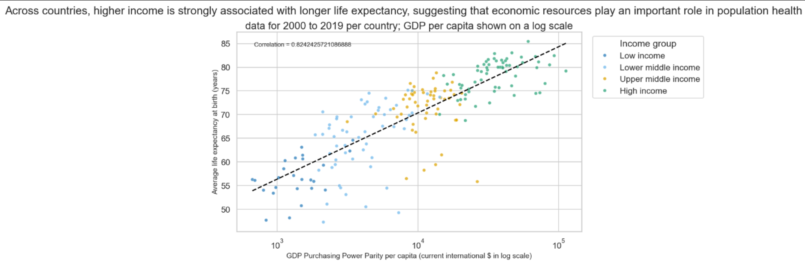
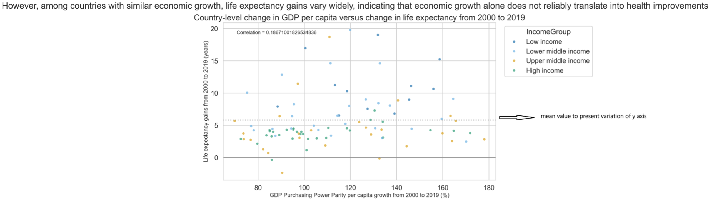

Proposition: Higher GDP per capita leads to higher life expectancy
FOR the Proposition

Design Decisions and Rationale:
- (+1.5) We used GDP per capita on a log scale from 2000–2019, which reduces skewness and provides a stable long-term view, making the positive relationship easier to interpret.
- (+1) We colored countries by income group, which visually clusters higher-income countries at higher life expectancy levels, reinforcing the consistency of the trend.
- (-0.5) We truncated the y-axis to start at 50 instead of 0, which exaggerates the differences in life expectancy and makes the relationship appear stronger.
AGAINST the Proposition

Design Decisions and Rationale:
- (-1) We used GDP growth instead of GDP per capita, which changes the framing of the data and weakens the perceived relationship between economic development and life expectancy.
- (+1) We plotted changes in life expectancy rather than absolute values, which highlights variability across countries and reduces the appearance of a consistent trend.
- (+0.5) We included a wide range of countries with different development levels, which shows large variation in outcomes and emphasizes the lack of a strong correlation.
Final Reflection
For our first visualization, we are trying to convey that a higher income across a country also leads to a longer life expectancy. To convey this, we used a scatter plot with GDP per capita on a log scale from 2000-2019 on the x-axis and life expectancy on the y-axis. For the x-axis, we used a log scale to reduce the amount of skew that was present in the data and show the overall trend in a clearer way. For the y-axis we decided to start the axis from 50 instead of 0. By doing this we are able to subtly place emphasis on the relationship and make it appear stronger. Now when we plot a line through the points it shows a strong positive correlation between the two variables. Finally, we distributed the points into different income brackets to show that the trend follows across all levels of income. By coloring in the points we can convey the consistency of trend and further convince the reader of the message being conveyed.
For our next visualization, we graph the data in a similar way, but now we are trying to convince readers that a life expectancy can widely vary regardless of a country's economic growth. We plot the GDP purchasing power parity per capita growth from 2000-2019 on the x-axis with the life expectancy gains from 2000-2019 on the y-axis using a scatter plot. Then we plot a line through the points and see that this time the correlation between the points is significantly weaker. Similar to the first graph, we also group the data into income groups which also appear to be random. However, these groups now span a wide variety of countries, leading to larger variation. For this visualization, we also changed the axes. The x-axis is now using GDP growth instead of current GDP. This causes the variables to appear no longer correlated. This subtle difference between used now effectively conveys to readers of the second graph that GDP is not responsible for a longer life span. Additionally, for the y-axis, we graphed the change in life expectancy instead of the absolute value. This further removes the correlation between the variables.
The key difference between both graphs is that the first figure graphs total GDP while the second figure graphs GDP growth between 2009 and 2019. This is a subtle difference that may not be immediately apparent, but it results in drastically different results. This is because a thoroughly developed country may have a decline in GDP growth after becoming a developed country, which includes many western countries since the data starts in 2009. A less developed country could have an extremely high GDP growth, but still not be considered developed or first world. This subtle distinction leads to the graphs seemingly plotting similar data but showing very different results and therefore supports each side of their respective argument.